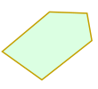
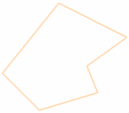
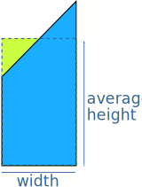
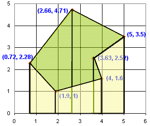

Area of Irregular Polygons
Introduction
I just thought I would share with you a clever technique I once used to find the area of general polygons.
The polygon could be regular (all angles are equal and all sides are equal) or irregular
 |
 |
| Regular | Irregular |
The Example Polygon
Let's use this polygon as an example:

Coordinates
The first step is to turn each vertex (corner) into a coordinate, like on a graph:

Area Under One Line Segment
Now, for each line segment, work out the area down to the x-axis.

So, how do we calculate each area?

Average the two heights, then multiply by the width
Example: For the shape highlighted above, we take the two heights (the "y" coordinates 2.28 and 4.71) and work out the average height:
(2.28+4.71)/2 = 3.495
Work out the width (the difference between the "x" coordinates 2.66 and 0.72)
2.66-0.72 = 1.94
The area is width×height:
1.94 × 3.495 = 6.7803
Add Them All Up
Now add them all up!
But the trick is to add when they go forwards (positive width), and subtract when they go backwards (negative width).
If you always go clockwise around the polygon, and always subtract the first "x" coordinate from the second, it works out naturally, like this:
| From | To | |||||
|---|---|---|---|---|---|---|
| x | y | x | y | Avg Height | Width (+/-) | Area (+/-) |
| 0.72 | 2.28 | 2.66 | 4.71 | 3.495 | 1.94 | 6.7803 |
| 2.66 | 4.71 | 5 | 3.5 | 4.105 | 2.34 | 9.6057 |
| 5 | 3.5 | 3.63 | 2.52 | 3.01 | -1.37 | -4.1237 |
| 3.63 | 2.52 | 4 | 1.6 | 2.06 | 0.37 | 0.7622 |
| 4 | 1.6 | 1.9 | 1 | 1.3 | -2.1 | -2.7300 |
| 1.9 | 1 | 0.72 | 2.28 | 1.64 | -1.18 | -1.9352 |
| Total: | 8.3593 | |||||
You can also go the other direction. If you get a negative area just make it positive.
And it looks like this:

So that's it! The area is 8.3593
Area of Polygon Tool
Glad you read this far! You are rewarded with a link to the Area of a Polygon Drawing Tool that can do all of this for you. It also accepts manual entry of coordinates.